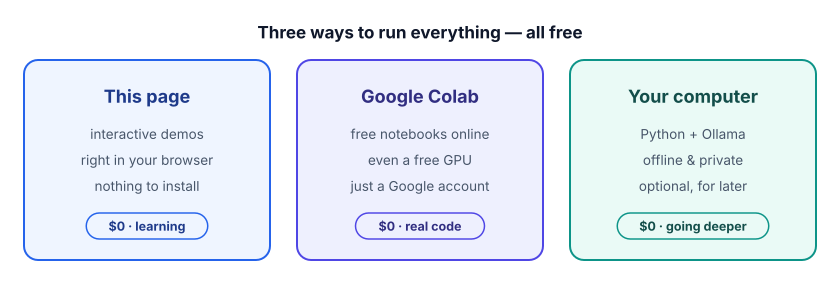
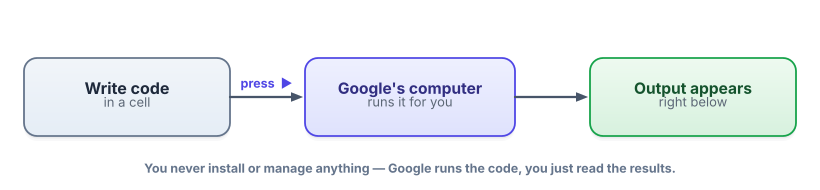

Your free, no-cost toolkit
To learn AI you need somewhere to run code.
Google Colab is a free website that runs Python code for you.
You type code into a box called a cell and press Shift + Enter.
The code runs on one of Google's computers, and the answer appears right under the cell.
There is nothing to install and no credit card to enter.
Colab is like a library's computer room. You show your library card, sit at a machine that isn't yours, type your work, and the result comes out right in front of you. Your work is saved in your locker so you can come back tomorrow.
| In the picture | In the real system |
|---|---|
| Your library card | A free Google account |
| The library's computer | Google's machine that actually runs your code |
| One request you type in | A cell: a small chunk of code you run on its own |
| The printout you get back | The output shown under the cell |
| Your locker | Google Drive, where Colab saves the notebook |
Where the picture breaks. A library computer is yours for the whole visit. Colab's free GPU (a fast chip for AI work) is shared: Google limits how long you can use it, and at busy times one may not be free.
Going deeper
In the next five minutes you’ll be running real Python in your browser — no installs, no credit card, no setup headaches. Let’s get your free workshop ready.
Why we need a place to run code
Reading about AI is like reading about swimming. Useful, but you learn in the water. From here on, most lessons include real code you should run and tinker with. So we need a place to run it that is (a) free forever, (b) needs nothing installed, and (c) won’t fight you. There are three good options, and you can mix them:

Google Colab, explained from zero
First, two words you’ll see constantly:
A notebook is a document where you can write and run code in small chunks, and see each chunk’s result right underneath it. Each chunk is called a cell. You write a bit of code in a cell, run it, look at the output, then write the next cell. It’s a conversation with the computer, one small step at a time — perfect for learning.
Google Colab (short for “Colaboratory”) is a free service that runs notebooks in your web browser. The clever part: the code doesn’t run on your computer at all. It runs on one of Google’s computers, and you just see the results. Nothing to install, nothing to break.

Run your first cell (do this now)
Follow along — it really does take about a minute:
- Go to colab.research.google.com in this browser and sign in with a free Google account.
- Click New notebook (you may find it under File → New notebook). You’ll see an empty cell — a grey box waiting for code.
- Click in the cell and type the line below.
- Press Shift + Enter (or click the little ▶ play button to the left of the cell) to run it.
print("Hello — my first cell is running on Google's computer!")Underneath the cell you’ll see the line printed back to you. That’s it — you just ran code in the cloud, for free. Press Shift+Enter again on a new cell to keep going.
print?print(...) is Python’s way of saying “show this to me.” Whatever you put in the parentheses gets displayed below the cell. We’ll meet it properly in the next lesson — for now, just know it’s how the computer talks back.
A first taste of real AI code
Let’s do something that actually points at where we’re headed. Every AI model breaks your text into pieces called tokens (that’s the whole next track). There’s a free, tiny library called tiktoken that does exactly that splitting. Watch:
# The "!" tells Colab to install a package. This is free and takes a few seconds.
!pip install tiktoken
import tiktoken
# Load the tokenizer used by several well-known models
enc = tiktoken.get_encoding("cl100k_base")
text = "Applied GenAI is learnable."
ids = enc.encode(text)
print("token ids:", ids)
print("the pieces:", [enc.decode([i]) for i in ids])Run it and you’ll see your sentence turned into a list of numbers, and then the actual little pieces those numbers stand for (you’ll notice the model often splits on word-parts, and that spaces get attached to words). Don’t worry about understanding it yet — that’s exactly what Lesson 1.2 is for. The point is: real AI tooling is free and one cell away.
You installed a real library and ran real model tooling, in your browser, for $0. Everything else in this course is just more of this — bigger ideas, same free workflow.
Two things worth knowing about Colab
It saves your work. Colab automatically saves notebooks to your Google Drive, so you can close the tab and come back later. You can also download a notebook as a file (File → Download).
There’s a free GPU for later. A GPU (graphics processing unit) is a chip that makes AI models run much faster. When we get to lessons that need one, you’ll turn it on under Runtime → Change runtime type → GPU. On the free tier this gives you a real GPU at no cost, though Google limits how long you can use it per session and doesn’t guarantee one is always free at busy times. For everything in Tracks 1–2, you won’t even need it.
You never have to do this, but some people like running things locally — fully offline and private. Two free, open-source tools cover it:
Python itself (from python.org) lets you run the same .py code on your machine. Ollama (from ollama.com) downloads and runs open AI models locally with one command — for example, after installing it you can run ollama run qwen2.5:7b in a terminal to chat with a small model entirely on your own hardware, no internet needed. We’ll point out where this is a nice option. For now, Colab is the path of least resistance.
- A notebook runs code in small cells; you run one, see its output, then write the next.
- Google Colab runs notebooks in your browser on Google’s computers — free, nothing to install, just a Google account.
- Run a cell with Shift + Enter; install free packages with
!pip install <name>. - Colab auto-saves to Google Drive, and offers a free GPU (Runtime menu) for the heavier lessons later.
- Running locally with Python + Ollama is a fine, free, offline alternative — entirely optional.
1. In a new Colab notebook, make a cell that prints your name and the result of 17 * 23.
2. In a second cell, install the free wikipedia package and print the first sentence of the article on “Tokenization”.
▸ Show solution & reasoning
Cell 1. You can compute right inside print:
print("Pavan")
print("17 times 23 is", 17 * 23) # Python does the math; we just display itCell 2. Install first, then use it:
!pip install wikipedia
import wikipedia
summary = wikipedia.summary("Tokenization", sentences=1)
print(summary)Why this matters: the pattern “install a free package, then import and use it” is 80% of how applied AI engineers pull in capabilities — embeddings, vector search, model runtimes. You just did it twice. If a package errors with “not found,” you almost always just forgot the !pip install line.
In Colab, you run a cell with !pip install tiktoken and it succeeds. Then in the very next cell you write import tiktoken and it works. Where did that package actually get installed?
Why does this course lean on free tools like Google Colab and small local models?
Your workshop is ready. Before we open the box on how LLMs actually work, let’s spend one lesson on the small amount of Python you’ll need — just enough to read and run every example with confidence.
In one line: Colab is a free notebook in your browser: type a cell, press Shift + Enter, and Google's computer runs it for you.